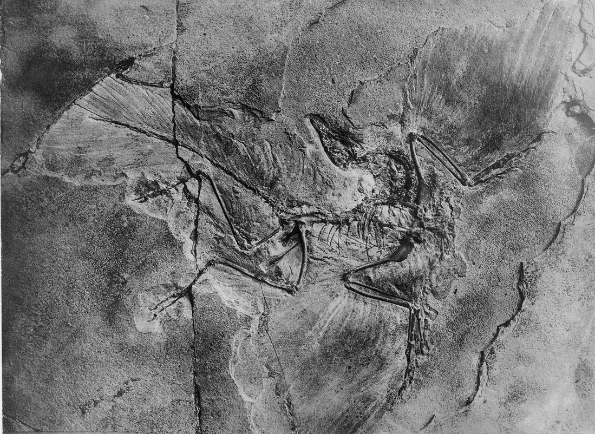

|  |
James H. Miller jhm5 -at- princeton.edu |
Chester Dale Predoctoral Fellow, Center for Advanced Study in the Visual Arts (CASVA)
Ph.D. Candidate, Department of Art & Archaeology, Princeton University
Dissertation: "Fossils for a Future Time: David Smith & the Sculpting of Traces"
Selected Publications
City Seer: Alfred Stieglitz Circa 1900
Oxford Art Journal, Volume 46, Issue 1, March 2023, Pages 45–65.
Kay Sage, Modern Architecture, and the Tyranny of Geometry
Art Journal, Volume 81, Issue 1, March 2022, Pages 62-80.
The Ideologue's Art: Sol LeWitt's Location Drawings
Locating Sol LeWitt, ed. David Areford (New Haven: Yale University Press, 2022), Pages 115-146.
The Flow Will Return: Geological Time in Winslow Homer's Work
American Art, Volume 33, Issue 1, Spring 2019, Pages 74-91.